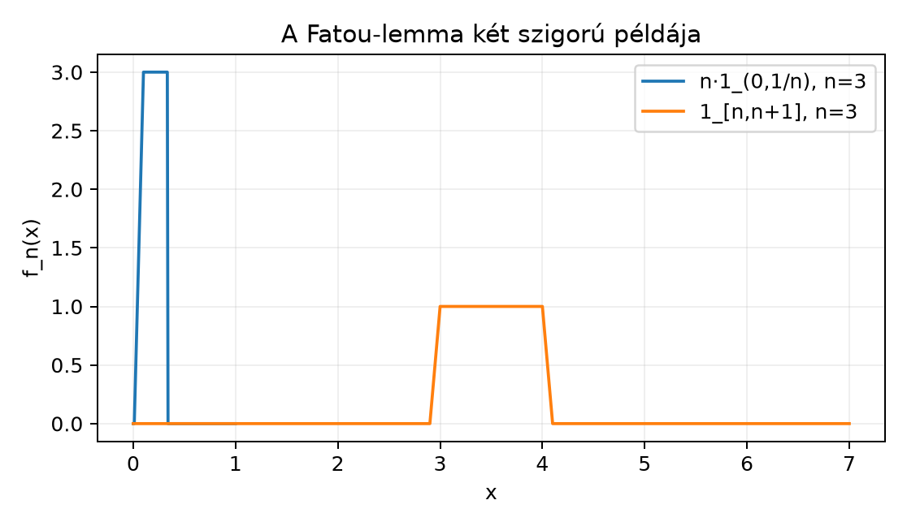

A monoton konvergencia tétel azt mondja ki,
hogy ha
és
,
akkor a határérték és az integrál felcserélhető:
Ez azonban erős monotonitást követel. A gyakorlatban gyakran
találkozunk olyan sorozatokkal, amelyek nem monoton növekvőek: a
függvények „tömege” elvándorolhat, oszcillálhat, vagy egyre magasabb és
keskenyebb tüskévé préselődhet. Ebben az alfejezetben azt a kérdést
vizsgáljuk, mi mondható általános, nemnegatív függvénysorozatokra.
A választ a Fatou-lemma adja: egyenlőséget ugyan nem
garantálhatunk, de a határfüggvény integrálja nem lehet nagyobb, mint az
integrálok sorozatának alsó határértéke.
10.3.2 Szemléletes kép
Két klasszikus jelenséget érdemes elképzelni. Az első esetben az
sávok jobbra vándorolnak: mindegyik integrálja
,
a pontonkénti határértékük azonban
.
A második esetben a tüske magassága nő, a tartója pedig összehúzódik:
integrálja ugyancsak
,
de a függvény minden rögzített pontban előbb-utóbb
lesz.

A Fatou-lemma két szigorú példája - A
tüske magassága 3, szélessége 1/3, a sáv a (3,4) intervallum indikátora;
mindkettő integrálja 1, pontonkénti határértéke 0.
A kék színű tüske magasodik és keskenyedik, a narancssárga sáv pedig
jobbra csúszik el. Mindkét függvény integrálja
,
miközben a pontonkénti határértékük
.
A Fatou-lemma éppen ezt a jelenséget fogalmazza meg: az integrálok
határértéke „eltűnhet”, de legfeljebb lefelé; felfelé nem tud
csalni.
10.3.3 A Fatou-lemma
Először idézzük fel a liminf fogalmát függvényekre. Egy
valós számsorozatra
Függvénysorozatra a liminf-et pontonként értelmezzük:
Tétel (Fatou-lemma). Legyen
mértéktér, és legyenek
mérhető függvények minden
esetén. Ekkor
A bal oldalon a függvények pontonkénti liminfjének integrálja áll, a
jobb oldalon pedig az integrálokból alkotott valós számsorozat liminfje.
A
függvény mérhető, mert mérhető függvények megszámlálható infimuma és
szuprémuma mérhető, lásd a Határértékek
mérhetősége alfejezetet.
Bizonyítás. Az ötlet az, hogy a sorozat
oszcillációját úgy szüntetjük meg, hogy a „farokrészek” infimumait
vesszük. Az így kapott
sorozat már monoton növekvő, ezért alkalmazhatjuk rá a monoton
konvergencia tételt. Ezután az egyetlen további észrevétel az, hogy
,
így az integráljaikra is hasonló egyenlőtlenség áll fenn.
A segédsorozat tulajdonságai. Legyen
Ekkor
nemnegatív és mérhető, továbbá
minden
-re.
A definícióból közvetlenül látszik, hogy
,
hiszen egy kisebb indexhalmaznak nagyobb az infimuma. Ezért
,
ahol
A monoton konvergencia tétel alkalmazása. A
sorozat monoton növekvő, nemnegatív és
,
tehát a monoton konvergencia tétel szerint
Az eredeti sorozathoz való kapcsolás. Mivel
,
az integrál monotonitása miatt
Jelölje
és
.
Ekkor
,
és ismert, hogy ebből
.
Továbbá
konvergens, ezért
.
Így
Mivel
,
éppen a Fatou-lemmát kaptuk. ∎
Megjegyzés. A tételben a nemnegativitás lényeges. Ha
a függvények negatív értékeket is felvehetnek, az állítás nem marad
igaz; erre a A dominált konvergencia tétel
alfejezetben látunk majd feltételeket.
10.3.4 Kidolgozott példák: szökő
tömeg és összehúzódó tüske
Példa (szökő tömeg, escaping mass). Legyen
,
a Lebesgue-mérték, és
Minden rögzített
esetén, ha
,
akkor
,
tehát
.
Ezért
minden
-re,
így
Ugyanakkor minden
-re
tehát
A Fatou-lemma tehát
alakú, és itt az egyenlőtlenség szigorú.
Példa (magasodó tüske). Legyen ismét
,
és
Ha
,
akkor
minden
-re.
Ha
,
akkor választhatunk olyan
-et,
amelyre
;
ekkor minden
esetén
,
tehát
.
Így
minden
-re,
ezért
Az integrál viszont
Ezért
Itt a tömeg nem a végtelenbe szökik, hanem egyetlen pontba
koncentrálódik. A Lebesgue-integrál a határfüggvényben ezt a pontmasszát
nem látja; ezt a jelenséget később a A
Dirac-mérték és a Disztribúciók: a Dirac-delta
pontos jelentése alfejezetben pontosítjuk.
10.3.5 Fatou mint
egyenlőtlenség-eszköz
A Fatou-lemma leggyakoribb alakja akkor jelenik meg, ha a
függvénysorozat konvergál.
Következmény. Ha
mérhető minden
-re,
és
majdnem mindenütt (m.m.), akkor
Valóban, a m.m. konvergencia miatt
m.m., és a nulla mértékű halmazon való eltérés az integrált nem
változtatja meg.
Ez az egyenlőtlenség igen hasznos alsó becslés. Ha például tudjuk,
hogy az integrálok sorozatának liminfje véges, akkor a határfüggvény
integrálja is véges. Az egyenlőséghez azonban további feltétel kell: a
másik irányú egyenlőtlenséget, azaz
általában nem kaphatjuk meg a Fatou-lemmából.
10.3.6 Kapcsolat a dominált
konvergencia tétellel
A Fatou-lemma tehát csak az egyik irányú egyenlőtlenséget adja. A A dominált konvergencia tétel alfejezetben azt
bizonyítjuk majd be, hogy ha létezik olyan integrálható majoráns
,
amelyre
,
akkor a határérték és az integrál mégis felcserélhető:
Ennek a tételnek a bizonyításában a Fatou-lemmát kétszer alkalmazzuk:
egyszer a
,
egyszer pedig a
nemnegatív sorozatra. Az itteni 3. feladat ezt a technikát készíti
elő.
10.3.7 A Fatou-lemma
halmazokra
A függvényes alakból azonnal következik egy hasznos halmazokra
vonatkozó egyenlőtlenség. Ehhez idézzük fel, hogy a halmazsorozat
liminfje
tehát azon pontok halmaza, amelyek véges sok kivételtől eltekintve az
összes
-ben
benne vannak.
Következmény. Ha
minden
-re,
akkor
Bizonyítás. Alkalmazzuk a Fatou-lemmát az
függvényekre. Először is
Valóban, ha
véges sok kivétellel benne van az
-ekben,
akkor az indikátorértékek sorozata véges sok kivétellel
,
ezért liminfje
;
ha pedig végtelen sok
-re
,
akkor az indikátorsorozat végtelen sokszor
,
ezért liminfje
.
Így a Fatou-lemma szerint
Ezzel a halmazokra vonatkozó állítást beláttuk. ∎
Továbbvitt eredmény. A Fatou-lemmát a A dominált konvergencia tétel alfejezetben a
majoránsos határátmenet bizonyításához használjuk, a Teljesség: a Riesz–Fischer-tétel alfejezetben pedig
ahhoz, hogy egy gyorsan konvergáló Cauchy-sorozat pontonkénti
határértéke is a megfelelő
-térben
legyen.
10.3.8 Tipikus hibák és
félreértések
A nemnegativitás elhagyása. A Fatou-lemma nem
érvényes tetszőleges, negatív értékeket is felvevő sorozatra. Például
esetén a határfüggvény
,
integrálja
,
míg az integrálok sorozata
,
tehát a kívánt
egyenlőtlenség hamis. A negatív értékek kezeléséhez integrálhatósági
feltétel kell.
A
és a
összekeverése. Ha a függvénysorozatnak van pontonkénti
határértéke, akkor
,
így a Fatou-lemma egyszerűbb alakot ölt. Általában azonban a liminf nem
egyenlő a limesszel, ezért a tétel bal oldalán mindig a liminf függvény
szerepel.
Azt hinni, hogy a Fatou-lemma egyenlőséget ad. A
fenti szökő sáv és összehúzódó tüske példája mutatja, hogy az
egyenlőtlenség lehet szigorú. Ez nem hibás állítás, hanem annak a jele,
hogy a konvergencia során tömeg veszhet el.
A liminf rossz helyre tétele. A jobb oldalon az
integrálokból alkotott számsorozat liminfje áll:
.
Nem pedig az
kifejezés megismétlése. A két mennyiség általában különbözik.
10.3.9 Feladatok
Fogalmi feladat. Legyen
és
.
Definiáljuk a következő sorozatot:
Határozza meg a
függvényt és a
értéket. Teljesül-e a Fatou-egyenlőtlenség?
Számolási feladat. Legyen
és
.
Tekintsük az
sorozatot. Számítsa ki az
értéket, a
függvényt, majd a
mennyiségeket.
Bizonyítási feladat. Tegyük fel, hogy
mérhető,
minden
-re,
ahol
mérhető és
,
továbbá
m.m. Alkalmazza a Fatou-lemmát a
sorozatra, és igazolja, hogy
Ellenpélda-keresés. Adjon meg olyan nemnegatív
mérhető függvénysorozatot, amelyre a Fatou-egyenlőtlenség egyenlőséggel
teljesül, és olyat, amelyre szigorú. A szigorú esetben indokolja meg,
miért nem mond ellent a monoton konvergencia tételnek.
10.3.10 Megoldások
Ha
,
akkor
és
,
tehát az
sorozat
alakú, ezért
.
Ha
,
akkor hasonlóan
és
,
tehát
.
Ha
nincs egyik intervallumban sem, akkor minden
.
Ezért
Másrészt minden
-re
így
A Fatou-lemma tehát a
egyenlőtlenséget adja.
Minden
-re
Rögzített
esetén, ha
,
azaz
elég nagy, akkor
,
ezért
.
Ha
,
akkor
minden
-re.
Ezért
minden
-re,
tehát
Így
és
A Fatou-egyenlőtlenség itt szigorú:
.
Mivel
,
a
sorozat nemnegatív és mérhető. Továbbá
m.m., ezért
m.m. A Fatou-lemma szerint
Mivel
,
és
m.m., az
függvény integrálja is véges, ezért az integrálok lineárisan
szétbonthatók:
A
konstans, ezért kiemelhető:
Itt azt az azonosságot használtuk, hogy valós sorozatra
.
Mivel
véges, kivonhatjuk mindkét oldalból:
Ezzel a kívánt egyenlőtlenséget beláttuk.
Egyenlőségre példa. Legyen minden
-re
.
Ekkor
,
és az integrálok is mind
-ek,
így
Szigorú egyenlőtlenségre példa. Legyen
.
Ekkor minden integrál
,
de a pontonkénti határfüggvény
,
tehát
Ez nem mond ellent a monoton konvergencia tételnek, mert a sorozat
nem monoton növekvő: minden rögzített
-re
az
értéke előbb-utóbb
lesz, tehát nem teljesül az
feltétel.
10.3.11 Rövid összefoglaló
Fatou-lemma. Ha
mérhető minden
-re,
akkor
A bizonyítás lényege: a
sorozat monoton növekvő, ezért alkalmazható rá a monoton konvergencia
tétel, majd a
egyenlőtlenségből következik az állítás. A lemma nem ad egyenlőséget:
például az
sávok integrálja
,
de a pontonkénti liminf integrálja
;
hasonlóan az
tüskék is elvesztik tömegüket a határátmenetben. Halmazokra a lemmából
következik, hogy
.
Továbbvitt eredmény: a Fatou-lemmát a A dominált konvergencia tétel alfejezetben a
majoránsos határátmenet bizonyításához, a Teljesség:
a Riesz–Fischer-tétel alfejezetben pedig az
-teljesség
bizonyításához használjuk.